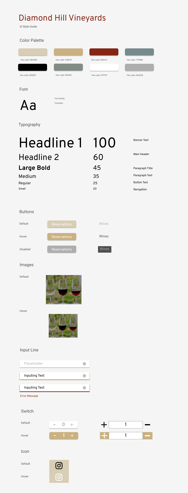

Diamond Hill Vineyards
A Responsive Redesign Project
Context
Diamond Hill Vineyards is a lovely local family-run vineyard in Cumberland RI. When I had the chance to redesign a website, I chose Diamond Hill Vineyards because most people don't even know that there are beautiful vineyards like this one in Rhode Island! Also, I believe that they can attract more visitors and boost their business if their website is more accessible and visually attractive. Currently, the website has the following issues:
Usability Problems
Responsiveness
The page is not responsive to website resizing and the texts do not wrap around to accommodate this change.
Simplicity
In terms of simplicity, the original website had multiple fonts and colors that added to user confusion. For instance, the logo had two different fonts with two different styles.
Guidance & Information Architecture
The website did not have good guidance and information architecture. The tabs for 'Home', 'Tastings', etc. are located in the upper middle part of the page and not right at the top as users would expect. The contact information is tiny and easy to miss at the bottom.
Accessibility Problems
Using WebAIM WAVE to detect possible accessibility problems, I found that some of the buttons have no alt text to explain what they are intended to do. For example, the social media, directions, and email buttons all just have alt text 'button' instead of including more description. Moreover, as mentioned above, the text in the 'Welcome' tab is not responsive to website resizing and stays fixed. This is because the text is written with br tags in between each line, disabling features such as text wrap and not accomodating users of devices with smaller displays.
Original website Click Here
Redesigned website Click Here
Research
Before I started designing, I browsed numerous winery and vineyard websites to observe and figure out the design aspects that help a vineyard website stand out. Based on my research, websites that stood out the most are the ones that looked the most professional, clean, and responsive with a learnable information hierachy. This made sense since users who are browsing winery and vineyard websites are usually in the older demographic for whom credibility is a priority.

Newport Vineyards Click Here

Decoy Winery Click Here
Design Iterations
I started my design process with low-fi and high-fi sketches along with a visual style guide. Even though a lot of the websites I browsed have a darker color scheme, I chose a lighter color scheme because Diamond Hill Vineyards also host events such as weddings and so to appeal to this customer group, I chose a softer color scheme.

Conclusion
This project helped me realize that there are a lot of components and design aspects to consider when making a website responsive with a learnable information architecture. Although this project made me resize my browser a lot, some of the things I learned were setting max-width with percentages and using rem instead of px for ease of designing. I didn't have much experience designing websites, let alone a responsive website, so this project was a valuable lesson for me. I hope you enjoyed exploring my redesigning of the Diamond Hill Vineyards website!